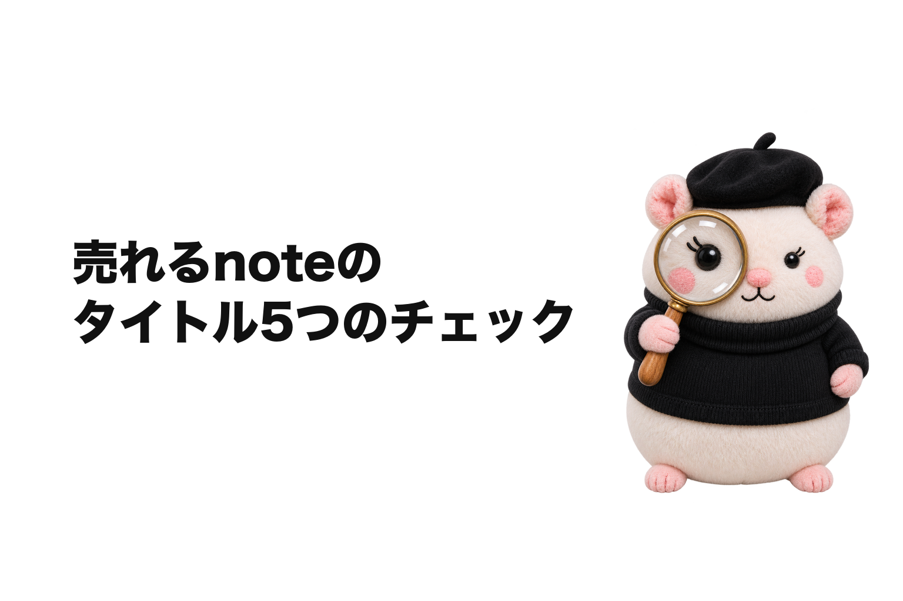

noteでは「タイトルが9割」と言われます。
これは、タイトルにいちばん力を入れよう、という意味です。
どれだけ本文がよくても、開いてもらえなければ読まれないからです。
ただ、タイトルの言葉を1つ変えても、クリック数は数%しか変わりません。
大きく変わるのは、タイトルそのものを別のものに変えたときです。
結論から言うと、力を入れるべきなのは、言葉の細かい調整ではありません。
タイトルの案をいくつも出すことです。
noteの有料記事を約1,000本調べ、海外のA/Bテストの研究とあわせて、売れるタイトルの5つのチェックにまとめました。
この記事では、次の3つを書きます。
- タイトルに力を入れるとは、具体的に何をすることか
- スキは多いのに売れないタイトルの3つの特徴
- 公開前に確認したい5つのチェック
この記事を書いた人

この記事は、noteとBrainと自分のサイトで、フォロワーゼロから教材を88部売ってきたきくりんが書いています。
最近の有料記事では、タイトルを30案出してから選びました。
1. タイトルに力を入れるとは、案をたくさん出すこと
海外のニュースサイトで実際に試されたA/Bテストを、数万件分析した研究があります。
タイトルの言葉を1つ入れ替えても、クリック数の差は数%でした。
言葉の特徴だけでどちらが勝つかを当てようとしても、正解率はほぼ半々です。
一方で、タイトルを丸ごと別の案にすると、勝った案は2割以上多くクリックされていました。
言葉を少し直すより、まったく違うタイトルをいくつも作るほうが効果があるということです。
「タイトルが9割」の力は、ここに使いましょう。
2. 売れるタイトルは「読むと何が手に入るか」がすぐ分かる
左の2つは、読むと何が手に入るのかが分かりません。
「完全」「まとめ」「作り方」は、どんな記事にも付けられる言葉だからです。
右の2つは、読むと何が分かるのかが一目で伝わります。
note公式のヘルプでも、タイトルについて次のように案内されています。
- 長さは15〜25字くらい
- 何の記事か、誰に向けた記事かを具体的に書く
- 【】や●で無理に目立たせない
長いタイトルは、一覧やXで途中から「…」と省略されます。
ただ、全体は長くてもかまいません。
売れている有料記事は、40字前後のものが多くありました。
大事なのは、先頭の15〜25字で、読むと何が手に入るか分かることです。
3. スキは多いのに売れないタイトルの3つの特徴
noteの有料記事を約1,000本集めて、タイトルを比べてみました。
対象は「noteで売る・稼ぐ」をテーマにした記事です。
そのうち、スキが300以上ついている記事に絞りました。
そのなかで、ほとんど売れていない記事と、よく売れている記事を比べています。
ほとんど売れていない記事では、3割に大げさな言葉が入っていました。
半分は60字を超え、2割はタイトルに#が入っていました。
よく売れている記事には、大げさな言葉も#も1本もありません。
面白いのは値段です。
どちらも3,000円前後で、ほとんど差がありませんでした。
差がついたのは、値段ではなくタイトルの付け方だったわけです。
スキが集まるのは、タイトルが目を引くからでしょう。
でも、お金を払う前の人は「本当かな」と疑いながら読んでいます。
言い過ぎたタイトルは、そこで信用されなくなります。
なお、比べた記事の数はまだ多くないので、目安として見てください。
4. よく聞くコツが、データでは逆だった3つ
どれもよく聞くコツですが、実際のA/Bテストの結果は逆でした。
疑問形のタイトルは、言い切ったタイトルより読まれにくいという研究が多くあります。
答えをぼかすと、中身まで弱そうに見えてしまいます。
「あなた」と呼びかける言葉は、効果が見られませんでした。
効果があったのは、「ぼく」や「あの人」など、特定の人の話です。
不安をあおる言葉も、クリック数が下がっていました。
効果があったのは、うまくいかなかった事実をそのまま書くことです。
たとえば「このままだと売れません」より、「3か月、1部も売れなかった」のほうが読まれます。
5. タイトルは3〜5案作り、売れた数で決める
ここまでは、タイトルを作るときの話でした。
最後に、公開したあとの話です。
まったく違うタイトルを3〜5つ作り、しばらく使ってみて、売れた数で比べます。
クリック数だけで決めるのはおすすめしません。
大げさなタイトルは、クリック数だけなら勝ってしまうことがあるからです。
もう1つ、すぐに決めないことも大切です。
同じ2つのタイトルで比べ直しても、4回に1回は結果が入れ替わっていました。
例えば、この記事のタイトルも、角度を変えて3案作りました。
- 売れるnoteのタイトル、5つのチェック
- スキで終わらず売れるnoteのタイトル
- スキ300でも売れないnoteのタイトル
いちばん上をタイトルにしました。
残りの2つは、Xで紹介するときの1行目に使って、反応を比べます。
noteの有料記事は、あとからタイトルを変えられます。
変えるときは、購入者に通知するかを選ぶ画面が出るので、落ち着いて選んでください。
まとめ: 「タイトルが9割」は、案を出すことに力を使う
公開前に確認したい5つのチェックです。
- 先頭の15〜25字で、読むと何が手に入るか分かる
- 中身に合った数字を1つ入れる
- 大げさな言葉・#・60字超えをなくす
- 言い切る。疑問形やあおりにしない
- 3〜5案作って、売れた数で決める
タイトルに力を入れるというのは、言葉を少しずつ直すことではありません。
まったく違うタイトルをいくつも作ることです。
まずは、いま公開しているnoteを1本選んで、5つのチェックを当ててみてください。
そのうえで、違うタイトルを3つ書いてみましょう。
▼ネタの作り方から、AIで教材にまとめて売るまで、やったことを1冊にまとめてあります
フォロワーゼロから2ヶ月で利益101.5万円まで、数字と失敗と手順を全部書いた教科書です。
録音から記事、教材、販売ページ、売れたあとの台帳まで。うちで毎日使っているツールも付録に入れました。
『noteから始める「AI×◯◯」コンテンツ販売の教科書｜フォロワーゼロから2ヶ月で利益101.5万円』


販売価格は3部売れるごとに2,000円ずつ値上がりします（上限あり）。内容・最新価格は販売ページをご確認ください。